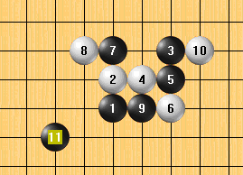

五子棋棋谱文件分析之－－POS文件解析
#1 <font color="red">五子棋棋谱文件分析之－－POS文件解析</font>作者：小丸.net 发表时间：2011-7-9 0:51:08
pos文件分析
水月在爱五子棋发WEB五子棋教程，我也做个连载，来分析一下我们五子棋文件的格式。今天
先来看POS文件，POS文件是一个单谱文件，每个文件只有一个变化。
使用UltraEdit或者其它16进制软件打开POS文件，可以看到以下的内容：
00000000h: 0B7061 54 62 63 72 52 51 71 55 7D ; .paTbcrRQqU}
看一下棋谱吧。

根据分析 ，我们可以判断出：文件第一个字节是本棋谱的的长度，后面就是一手一个字节，没
有其它的。
接来下分析每个字节对应每手棋的关系。
第一手70对应坐标h8，我们可以把这个H8转换为（7<a>，7<b>）(如何转应该不需要我多说了吧)，用14减后面一个数字a,再乘以15再加上前面一个数字即可，公式 (14-b)*15+a,以上结果(14-7)*15+7=112,再转为16进制即为70。
第二手为61，坐标为h9,数字坐标（7<a>，8<b>），根据公式(14-8)*15+7=97,转为十六进制为61.
 12.rar
12.rar